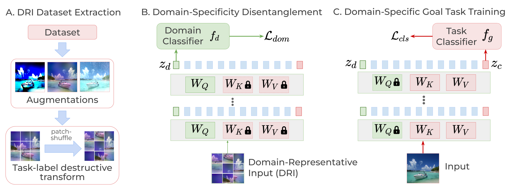
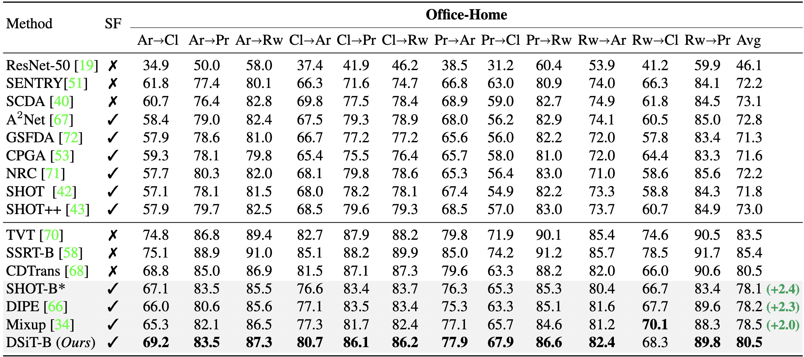
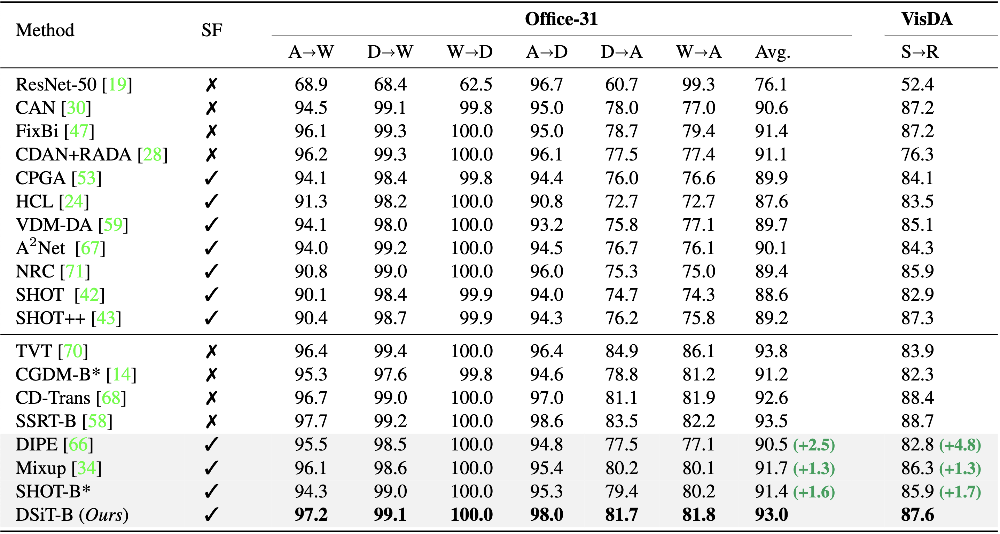

We analyze Source-Free Domain Adaptation (SFDA) from the perspective of domain specificity, and
show that disentangling and learning the domain-specific and task-specific factors in a Vision Transformer
(ViT) architecture leads to improved target adaptation.
Fig.1 - A. Overview of the proposed framework. B. Conventional DA methods
preserve domain-invariance, resulting in only task-oriented clusters in the feature space. C.
Our proposed disentanglement ensures that different domains are well-clustered.
Abstract
Conventional Domain Adaptation (DA) methods aim to learn domain-invariant feature
representations to improve the target adaptation performance. However, we motivate
that domain-specificity is equally important since in-domain trained models hold
crucial domain-specific properties that are beneficial for adaptation. Hence, we propose
to build a framework that supports disentanglement and learning of domain-specific
factors and task-specific factors in a unified model. Motivated by the success of
vision transformers in several multi-modal vision problems, we find that queries could
be leveraged to extract the domain-specific factors. Hence, we propose a novel
Domain-Specificity inducing Transformer (DSiT) framework for disentangling and learning
both domain-specific and task-specific factors. To achieve disentanglement, we propose to
construct novel Domain-Representative Inputs (DRI) with domain-specific information to train
a domain classifier with a novel domain token. We are the first to utilize vision transformers
for domain adaptation in a privacy-oriented source-free setting, and our approach achieves
state-of-the-art performance on single-source, multi-source, and multi-target benchmarks.
Proposed Approach

Fig.2 DSiT Training - A. Creating Domain Representative Inputs (DRI) B.
Domain-Specificity Disentanglement for the domain classification task C. Goal Task training.
Main Results
1. Single-source DA on Office-Home

Table 1. Results on the Office-Home dataset. ResNet-based results (top) and ViT-based results (bottom).
2. Single-source DA on Office-31 and VisDA

Table 2. Results on the Office-31 and VisDA datasets. ResNet-based results (top) and ViT-based results (bottom).
Citing our work
@article{sanyal2023dsit,
author = {Sanyal, Sunandini and Ramayee Asokan, Ashish and Bhambri, Suvaansh and Kulkarni, Akshay and Kundu, Jogendra Nath and Radhakrishnan, Venkatesh Babu},
title = {Domain-Specificity-inducing Transformers for Source-Free Domain Adaptation},
journal = {ICCV},
year = {2023},
}